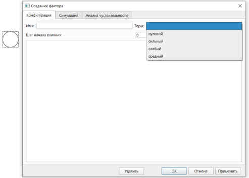
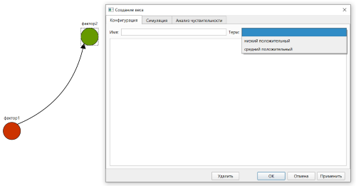

1. FCM construction in graph form is performed on the graph tab. To switch to this tab from another tab, click the "Graph" header.
2. The main area of this tab is an interactive FCM graph editing area. This area works in two modes: creating FCM elements and changing the values of FCM elements. The mode is switched by using the button in the lower-left corner of the tab. If the button is labeled "Creation mode", the mode for creating FCM elements is active. If the button is labeled "Value editing mode", the mode for changing FCM element values is active.
3. Creation mode allows the following actions:
3.1. Creating a concept:
3.1.1. Left-clicking an empty area creates a concept represented as a circle centered at the click position. When a concept is created, the concept window opens.

3.1.2. When creating a concept, its window lets you specify the name, a term from the concept term list, concept notes, and the step at which this concept starts affecting the system. The notes field works in the same way as the FCM notes field. If you press "Delete", "Cancel", or the window close button while the concept is being created, the concept is not created and its display is removed. If you press "OK", the concept is created and the window is closed. If you press "Apply", the concept is created, the window stays open, and switches to concept editing mode.
3.1.3. If the concept term is not set, the concept has no color. If the concept term is set, the concept uses the term color.
3.1.4. The concept name is displayed above the circle representing it.
3.1.5. If you left-click a concept and move the mouse, the concept is moved to the point where the left mouse button is released.
3.2. Creating a weight:
3.2.1. Right-click first on the concept from which the weight should originate and then on the concept into which the weight should enter. A corresponding weight is created and displayed as an arrow between these concepts. The weight window then opens.

3.2.2. When creating a weight, its window lets you specify the name, a term from the weight term list, and weight notes. The notes field works in the same way as the FCM notes field. If you press "Delete", "Cancel", or the window close button while the weight is being created, the weight is not created and its display is removed. If you press "OK", the weight is created and the window is closed. If you press "Apply", the weight is created, the window stays open, and switches to weight editing mode.
3.2.3. If no term is set, the weight is colored black. If a weight term is set, the weight uses the term color.
4. Value editing mode allows the following actions:
4.1. Right-clicking a concept opens the concept window in editing mode. Compared with creation mode, it has the following features:
4.1.1. If you press "Cancel" or close the concept window, the changes are discarded and the concept remains.
4.1.2. The window title contains the concept name.
4.2. Right-clicking a weight opens the weight window in editing mode. Compared with creation mode, it has the following features:
4.2.1. If you press "Cancel" or close the weight window, the changes are discarded and the weight remains.
4.2.2. The window title contains the weight name.
5. In both modes, the following actions are available:
5.1. If you press the middle mouse button and then move the mouse over the FCM graph display, the graph is panned accordingly.
5.2. Working with zoom:
5.2.1. Each forward rotation of the mouse wheel increases the graph scale by a factor of 1.15.
5.2.2. Each backward rotation of the mouse wheel decreases the graph scale by a factor of 1.15.
5.2.3. The current zoom value is shown at the bottom of the tab.
5.2.4. Clicking the "Scale to 100%" button resets the graph display to 100% zoom, which is the initial scale.